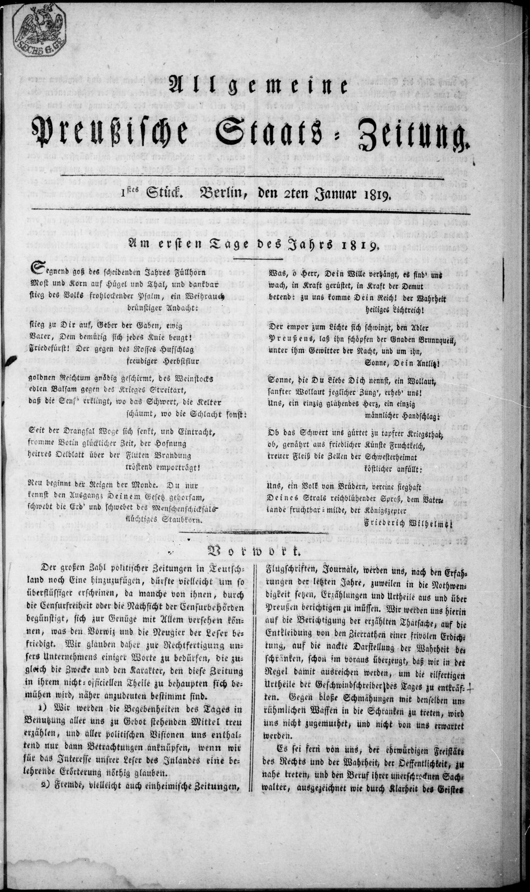

Law - senior - M1 - Conflict of norms


- Lex superior: the higher norm prevails
- Lex specialis: the special prevails over the general
- Lex posterior: the later prevails over the earlier
- Hierarchy: Constitution > law > sub-legal act
- Order of application: superior, then specialis, then posterior